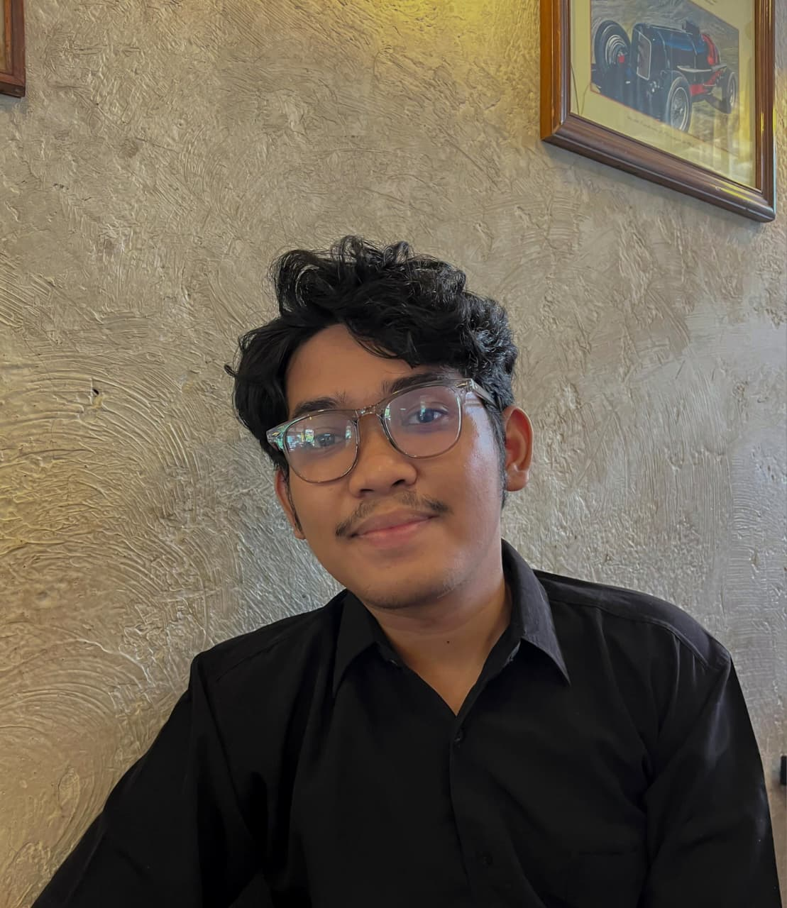
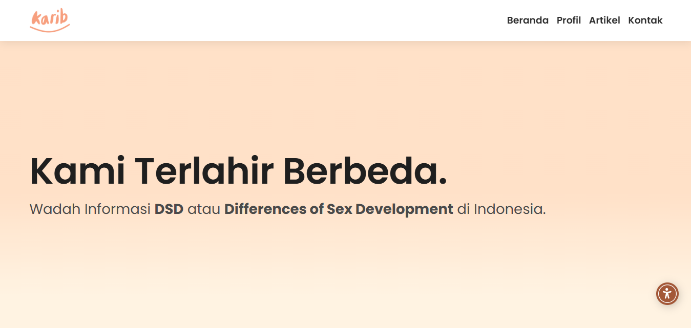
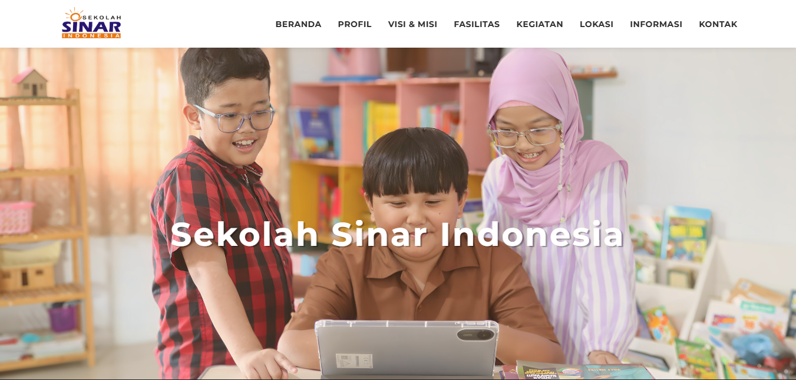
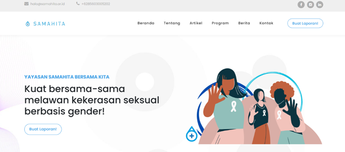
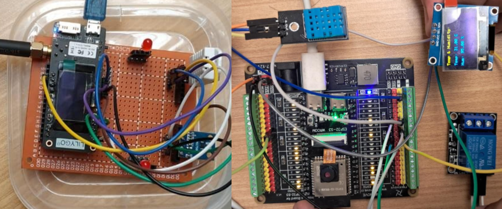

Technical
Web, networking, IT support, IoT and cloud fundamentals.
01 / INTRO
An entry-level professional with experience across technology implementation, technical support, program coordination, documentation, and digital projects.

Technology · Program · IT Support
ABOUT
My experience combines practical technology work with coordination, administration, documentation, troubleshooting, and stakeholder communication. This makes me comfortable both with technical tasks and with the people and processes needed to deliver a project well.
Web, networking, IT support, IoT and cloud fundamentals.
Scheduling, data management, documentation and issue tracking.
Facilitation, participant coordination, reporting and event support.
Selected experience across development, operations, assessment support, community programs and education.
Responsive interfaces, UI/UX improvements, Native PHP, MySQL, testing, debugging, maintenance and stakeholder coordination.
Dashboard development, data presentation, responsive design, optimization, QA, deployment, SEO and maintenance.
Participant support, assessor coordination, scheduling, issue monitoring, high-volume data management and documentation.
Assisted assessment sessions, coordinated concurrent schedules, handled issues and tracked participant progress.
Supported P2P Learning, delivered networking sessions, coordinated participants, handled program administration, FGD minutes and progress reporting.
Developed modules, guided 50+ students across three classes, troubleshot hardware/software/connectivity issues and supported academic operations.
Throughout my academic journey and professional career, I have gained diverse project experience that has strengthened both my technical skills and my ability to collaborate effectively in real-world environments.

In collaboration with Yifos Indonesia, I developed the Wadah Karib website, a platform providing accessible health and DSD-related education for the Indonesian public. Beyond the core website, I implemented content and image management tools, along with accessibility features such as text-to-speech and adjustable reading modes, ensuring the platform remained inclusive and easy to use for all visitors.

As part of my work with PT Seluas Tanah Merah, I designed and developed the Sekolah Sinar Indonesia website, an educational platform built around holistic, learner-centered principles. The site integrates structured learning programs, interactive activities, and character development features to create a comprehensive learning experience.

This final project focuses on designing and implementing the Samahita Foundation website as a digital platform for gender equality advocacy. The website provides educational information, articles, news, and programs, as well as a reporting feature for victims of gender-based violence. It aims to make reporting more accessible while improving public education, organizational transparency, and accountability.

(1) Humidity & Temperature, and Light Intensity Monitoring System Using DHT22 and GY-302 BH1750; ini menjelaskan sistem monitoring yang mengukur suhu, kelembapan, dan intensitas cahaya secara real-time menggunakan sensor DHT22 dan GY-302 BH1750, guna memantau kondisi lingkungan suatu ruangan atau area.(2) ESP32 Programming and Interfacing ESP32 with Sensors and Actuators; Judul ini menjelaskan modul pemrograman ESP32 untuk membaca data sensor dan mengendalikan aktuator seperti relay dan OLED melalui komunikasi I2C dan Arduino IDE, sebagai dasar dalam desain sistem embedded dan IoT.
Activities that reflect continued learning, community engagement, facilitation, and practical exposure beyond formal work experience.
Developed knowledge and practical skills in holistic security, covering digital security, physical safety, and psychosocial well-being for activists and civil society actors.
Served as a speaker, delivering a session on computer networking and internet fundamentals to prepare participants for MikroTik certification.
CAPABILITIES
A cross-functional skill set that can adapt to technical and program-oriented roles.
Troubleshooting, participant support, issue tracking, documentation and operational coordination.
Scheduling, attendance, logistics, facilitation, FGD documentation, reports and stakeholder communication.
HTML, CSS, JavaScript, Bootstrap, Native PHP, MySQL, responsive interfaces and dashboard work.
TCP/IP, VLAN, routing, network security, AWS, IoT, MQTT/CoAP, Git and productivity tools.
Diploma in Telecommunication Technology (A.Mdt), GPA 3.52 · August 2025
Cisco Ethical Hacker, HCIA-Security, CCNA Introduction to Networks, HCIA-IoT, HCIA-Datacom, Cisco Introduction to IoT, and AWS Training & Certification.
Indonesian — Native · English — Professional (CEFR C1)
Open to opportunities in Program Officer, IT Support, operations, technology, and related entry-level roles.